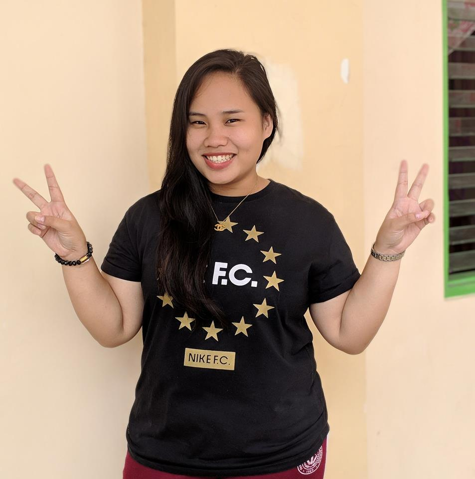
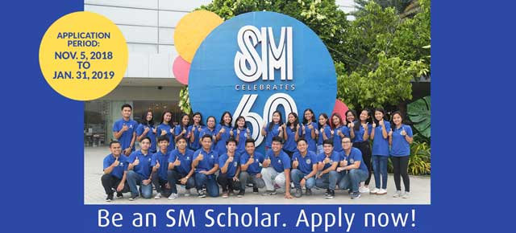

Good day! My name is Eunace Rocamora and you can call me Nace or just Eunace. I live in Parañaque City. I graduated both junior and senior high school at Parañaque National High School – Main. I am one of the scholars of “Tatang” (Henry SY). I take the scholarship examination here in Asia Pacific College.

SM Scholarship was not actually my first choice or the scholarship that I really want, it was just my second choice. The scholarship that I really want is the DOST Scholarship not just because of the incentives that I am going receive but the recognition when I graduated as a DOST Scholar.

Unfortunately, I didn’t pass the DOST Scholarship examination. When the page of DOST posted the list of people who pass the examination, the moment that I reach the end part of list and I did not see my name written there. I really feel so down, I feel that I am not smart enough to qualify as a DOST Scholar. Few days after the result of DOST examination, I got an email from SM foundation that I will be taking the Scholarship examination on February 3,2018. I actually forgot that I pass my requirements to the website of SM Foundation. I got a thought that maybe DOST Scholarship was not really for me and there will be a better scholarship for me. I took the examination here in Asia Pacific College, and YES! I pass the examination and interview.
One month after the examination, I got a call from Miss Ling and she said that I was chosen as one of the scholars who will give their testimonies. I was so shock and so happy. I realize that sometimes we do not get what we really want because God wants us to realize that we should not only focus on only one opportunity.
I expect that Miss Arroyo will teach us how to make Graphical User Interface in our codes. I also expect that this class will be fun and exciting.